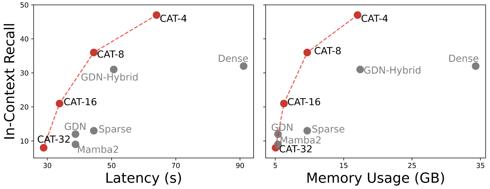
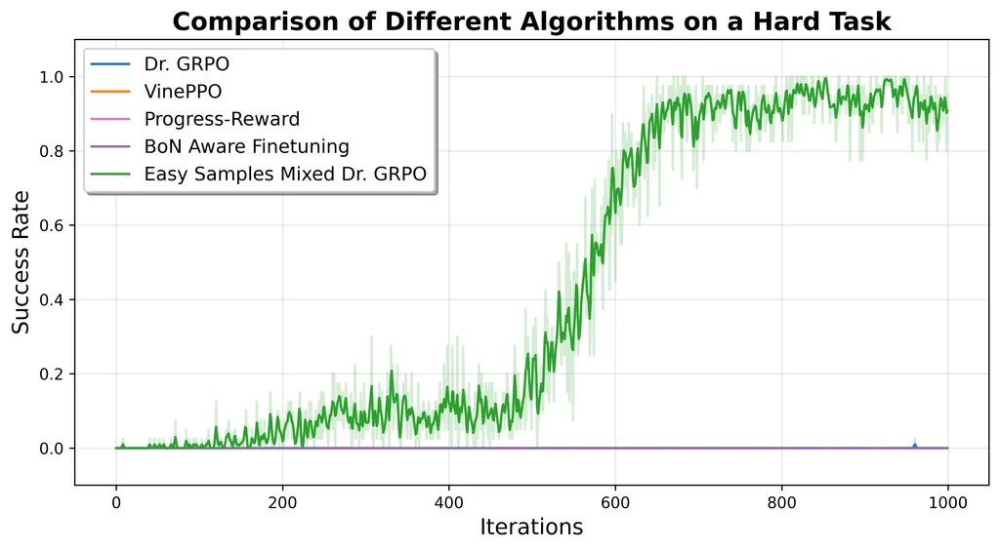
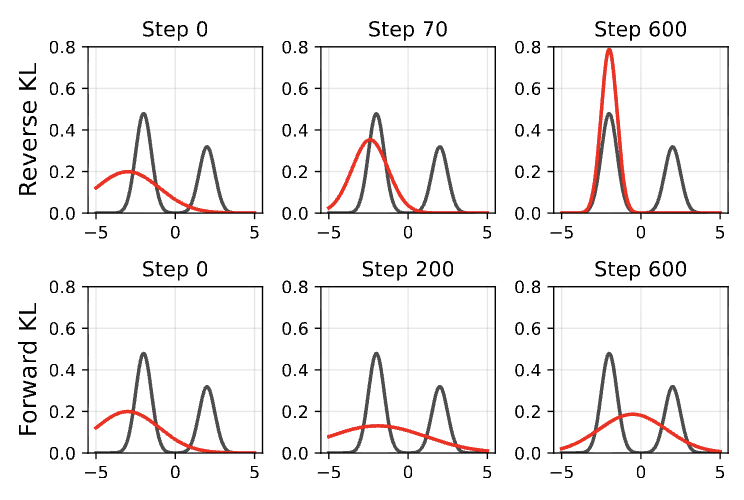
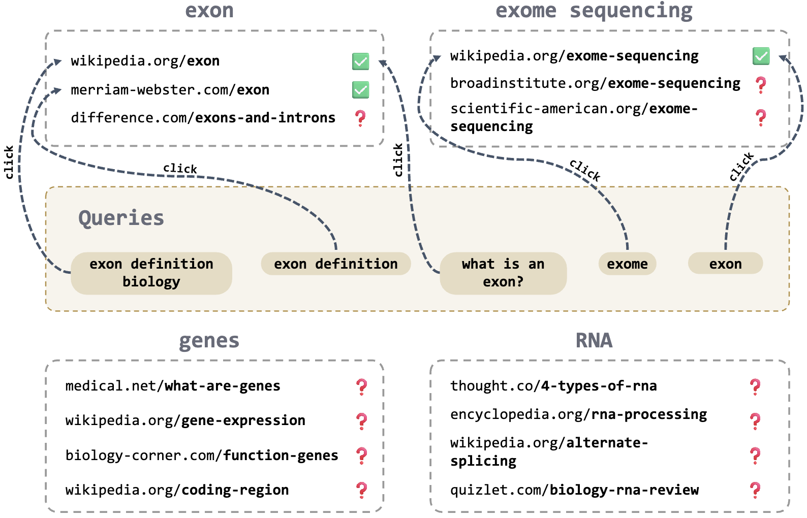
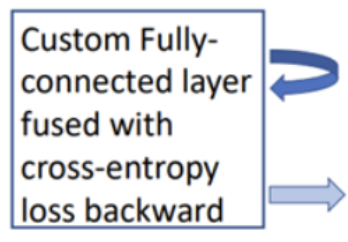
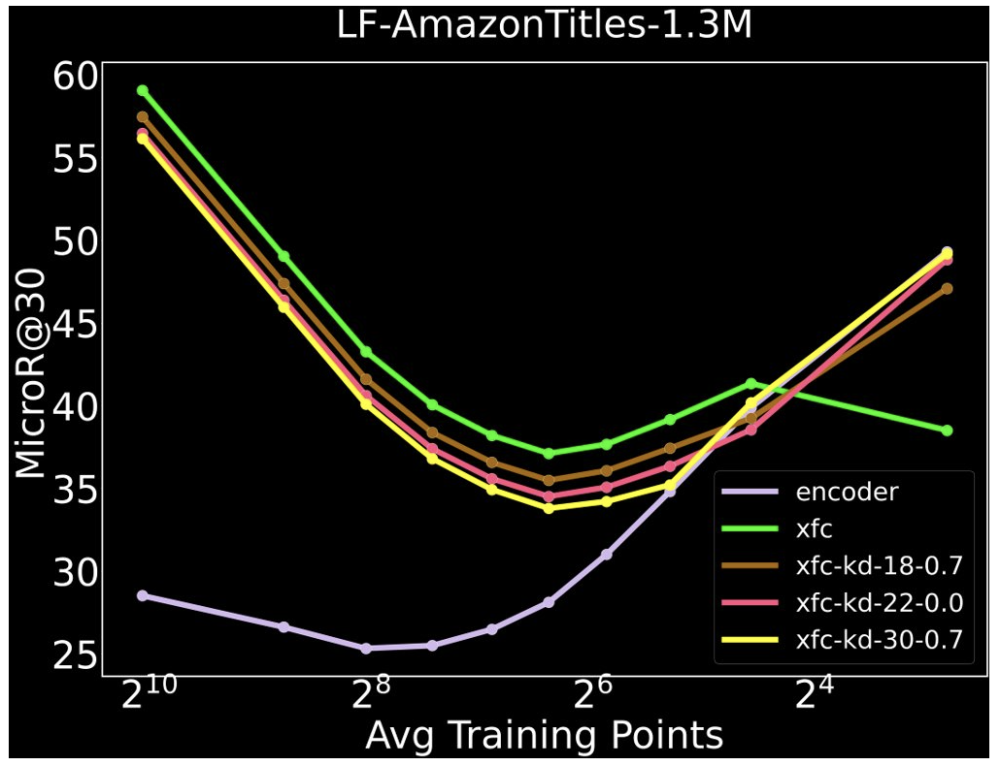
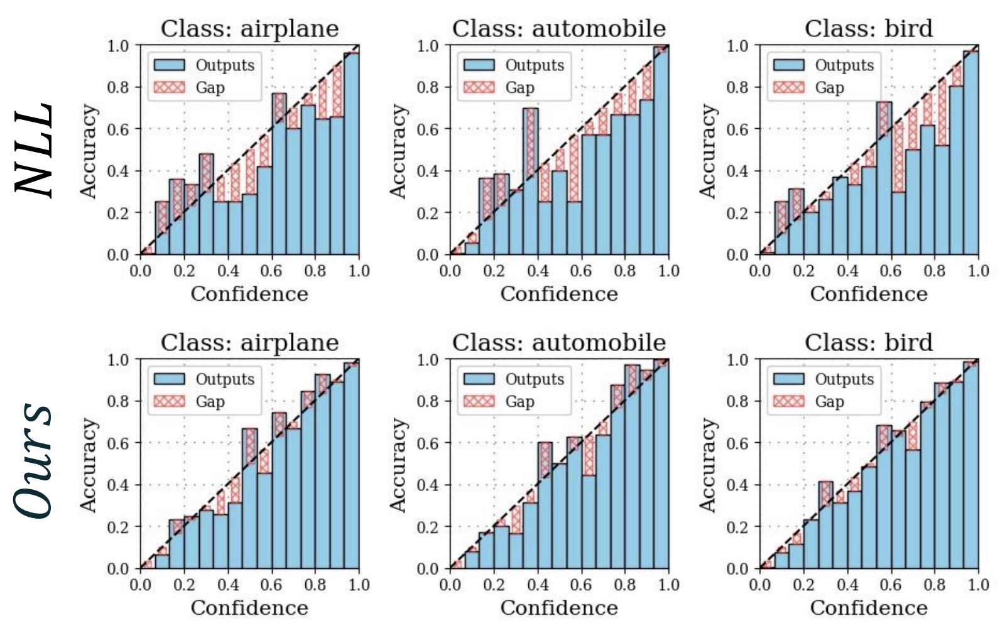

|
Jatin Prakash
I'm a first second year CS PhD student at New York University advised by Prof. Rajesh Ranganath. I am also part of the CILVR Lab.
I am broadly interested in designing scalable, practical and efficient foundation model architectures and training algorithms: both pre-training and post-training.
I believe to accomplish this, one must tackle every part of the modeling stack.
To this end, I have worked on: data curation [1, 2], designing novel model architectures [3], improving training algorithms [4], and low-level system optimizations [5].
Previously, I spent two amazing years at Microsoft Research, where I was advised by Dr. Manik Varma and Dr. Amit Sharma. Some of my research during this time found its way into Microsoft Bing [2, 5].
Even before that, I graduated from IIT Delhi with a bachelors in CS. During my undergrad, I worked with Prof. Chetan Arora.
Email /
CV /
Google Scholar /
Twitter /
Github
|
|
Selected Research
|

|
Attention and Compression is all you need for Controllably Efficient Language Models
Jatin Prakash,
Aahlad Puli,
Rajesh Ranganath
preprint 2025 (New!)
ICML 2025 Efficient Systems for Foundation Models III (ES-FoMo) workshop
Paper /
Tweet /
Code
tldr; We design a language modeling architecture that gives you a “knob” to control efficiency at test-time, allowing a single model to span the whole spectrum of full-to-efficient without any re-training -- trading-off quality for efficiency directly at test-time. This is unlike prior works that require training from scratch to target particular quality-efficiency trade-offs.
|
|

|
What Can You Do When You Have Zero Rewards During RL?
Jatin Prakash*,
Anirudh Buvanesh*
Blog 2025 (New!)
Blog /
arXiv /
Tweet 1 / Tweet 2 /
Code (RL reasoning baselines)
tldr; We benchmarked recent RL algorithms on a simple star-graph task where they fail in zero reward scenarios, even those specially designed for this case.
Turns out, a very simple data-centric intervention of just adding easy samples of the task helps unlock RL training. Open-sourced implementations for many RL baselines (that had no official code) for the community to build upon.
|
|

|
KL-Regularized Reinforcement Learning is Designed to Mode Collapse
Anthony GX-Chen,
Jatin Prakash,
Jeff Guo,
Rob Fergus,
Rajesh Ranganath
preprint 2025 (New!)
NeurIPS 2025 Foundations of Reasoning in Language Models (RoRLM) workshop
Paper
tldr; We understand diversity collapse problem in RL, and how to principally fix it in 2 lines of code. Key idea is viewing KL-regularized RL as distribution matching to a target distribution. Our work explores how to define a good target for the proposal distribution (or policy in case of RL) that avoids mode collapse.
|
|

|
On the Necessity of World Knowledge for Mitigating Missing Labels in Extreme Classification
Jatin Prakash*,
Anirudh Buvanesh*,
Bishal Santra,
Deepak Saini,
Sachin Yadav,
Jian Jiao,
Yashoteja Prabhu,
Amit Sharma,
Manik Varma
KDD 2025
Paper /
Reviews /
Code
tldr; A simple, scalable and data-centric algorithm to mitigate bad quality click-data problem in retrieval (extreme classification), that scales to real-world industry query-ads datasets containing upto 10M+ documents. This outperforms SOTA significantly, highlighting the importance of good quality dataset (that contains diverse world knowledge) for retrieval. Part of this work has been deployed in Microsoft Bing.
|
|

|
Renee: End-to-end training of extreme classification models
Vidit Jain,
Jatin Prakash,
Deepak Saini,
Jian Jiao,
Ramachandran Ramjee,
Manik Varma
MLSys 2023
Paper /
Code
tldr; We unlock end-to-end training of large-scale retrieval (extreme classification) models that scales to 100M+ documents and 1B+ training examples, reducing training time from weeks to under a day. Turns out, simple end-to-end learning outperforms complicated, modular SOTA methods. This work has been deployed in Microsoft Bing.
|
|

|
Enhancing Tail Performance in Extreme Classifiers by Label Variance Reduction
Anirudh Buvanesh*,
Rahul Chand*,
Jatin Prakash,
Bhawna Paliwal,
Mudit Dhawan,
Neelabh Madan,
Deepesh Hada,
Vidit Jain,
Sonu Mehta,
Yashoteja Prabhu,
Manish Gupta,
Ramachandran Ramjee,
Manik Varma
ICLR 2024
Paper /
Reviews /
Code
|
|

|
A Stitch in Time Saves Nine: A Train-Time Regularizing Loss for Improved Neural Network Calibration
Ramya Hebbalaguppe*,
Jatin Prakash*,
Neelabh Madan*,
Chetan Arora
CVPR 2022 Oral (4.2% acceptance rate)
Paper /
Code
|
|